Wall of Fame
A tribute to the dedication and mastery of those who have carried the spirit of Colombian coffee to the world's most prestigious stages.
Un tributo a la disciplina y al esfuerzo de quienes han honrado el café especial colombiano en competencias alrededor del mundo.
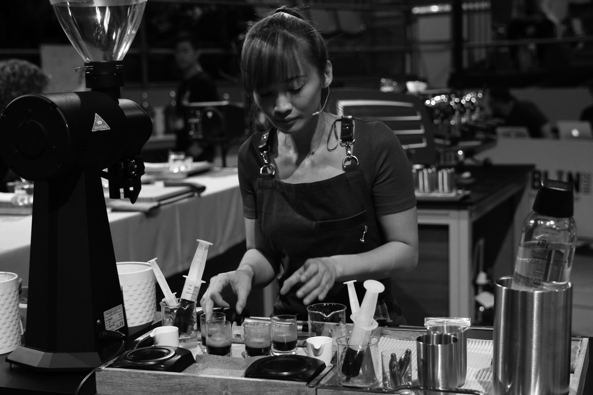
Singapore Barista Champion · WBC Dublin
Regina Tay
Geisha · Lactic Process · Independent
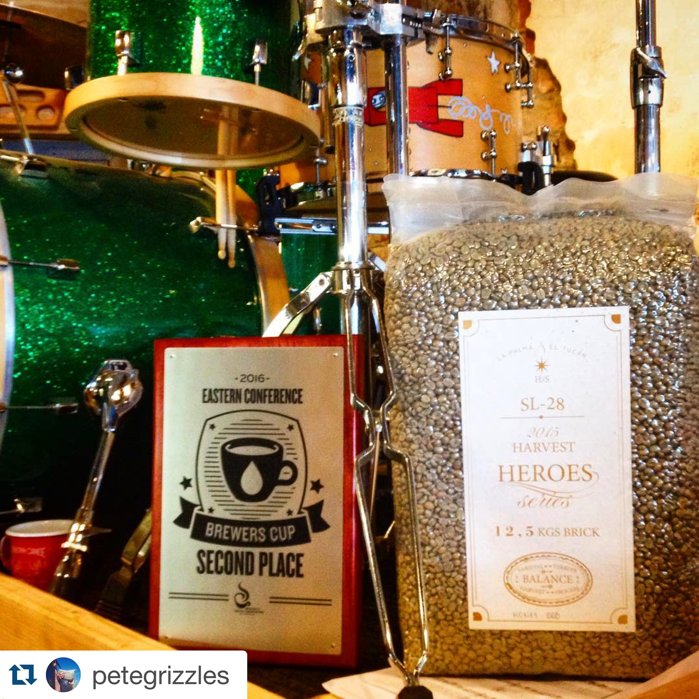
Greece Barista Champion · WBC Dublin
Stefanos Paterakis
Sidra · Lactic Process · TAF Coffee

Denmark Brewers Cup Champion
Dane Oliver
Geisha · Lactic Honey · La Cabra Coffee Roasters
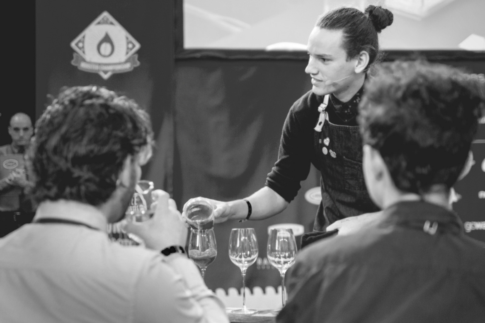
Norway Barista Champion · WBC Dublin
Lise Marie Rømo
Castillo · Lactic Process · Java Espressobar / Kaffa
2016
2017

US Brewers Cup Champion
Dylan Siemens
Geisha · Lactic Process · Onyx Coffee Lab
US Roaster Champion
Mark Michaelson
Geisha Natural Lactic · Onyx Coffee Lab
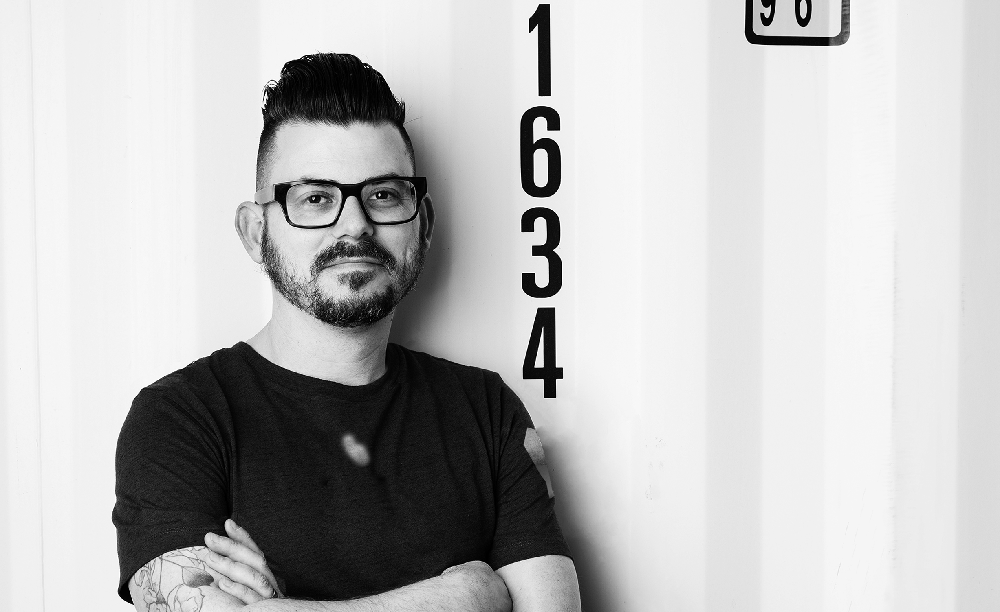
Italy Barista Champion · WBC Seoul Finalist
Francesco Masciullo
Geisha & Sidra · Lactic · Ditta Artigianale
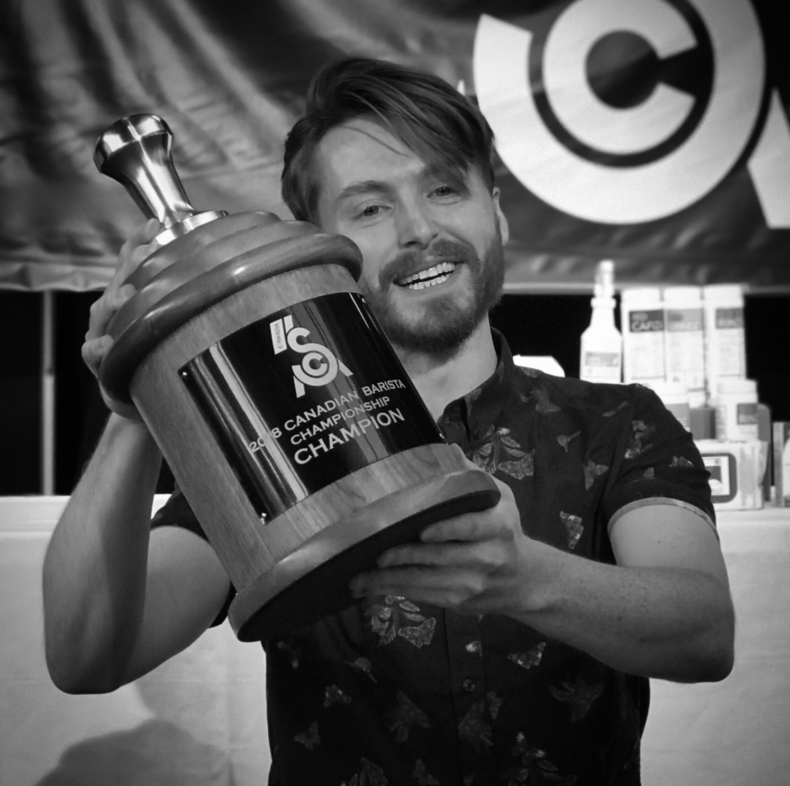
Canada Barista Champion · WBC Amsterdam Finalist
Cole Torode
Geisha & Sidra · Rosso Coffee Roasters
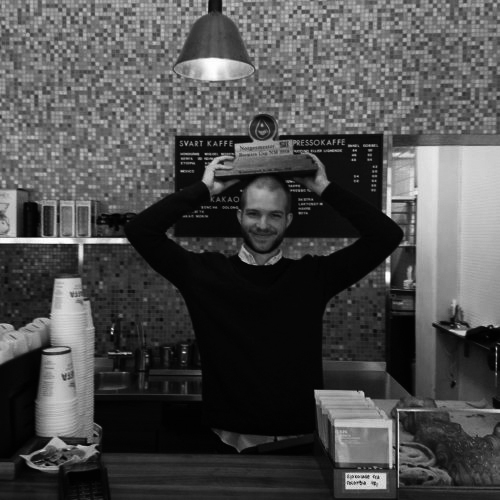
Norway Brewers Cup Champion
Tom Kuyken
Geisha Natural · Kaffa
2018
2019
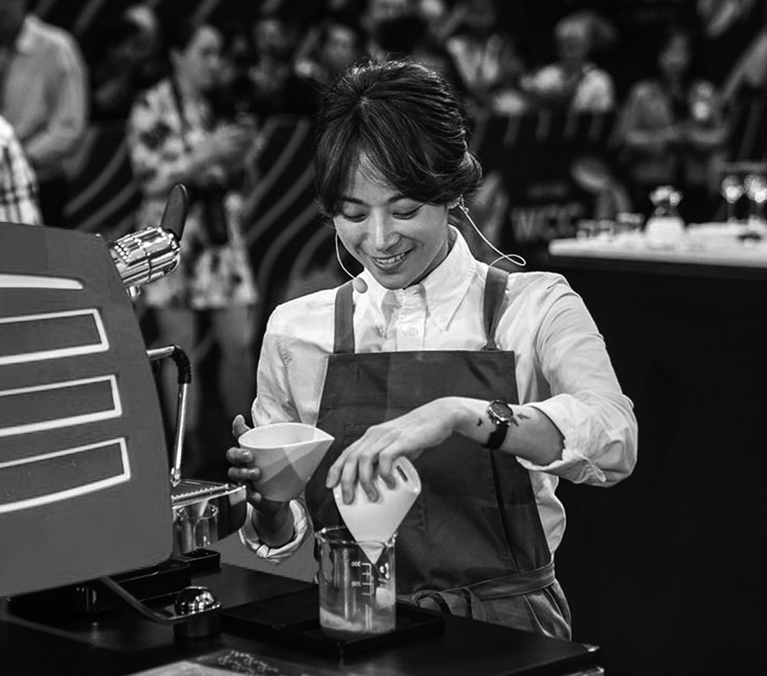
★ World Barista Champion
Jooyeon Jeon
South Korea · Sidra Lactic · Momos Coffee
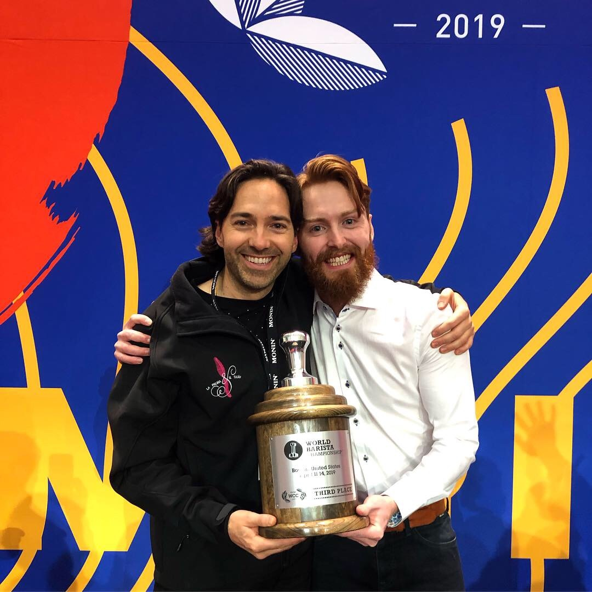
WBC Boston · 3rd Place
Cole Torode
Canada Barista Champion · Rosso Coffee Roasters
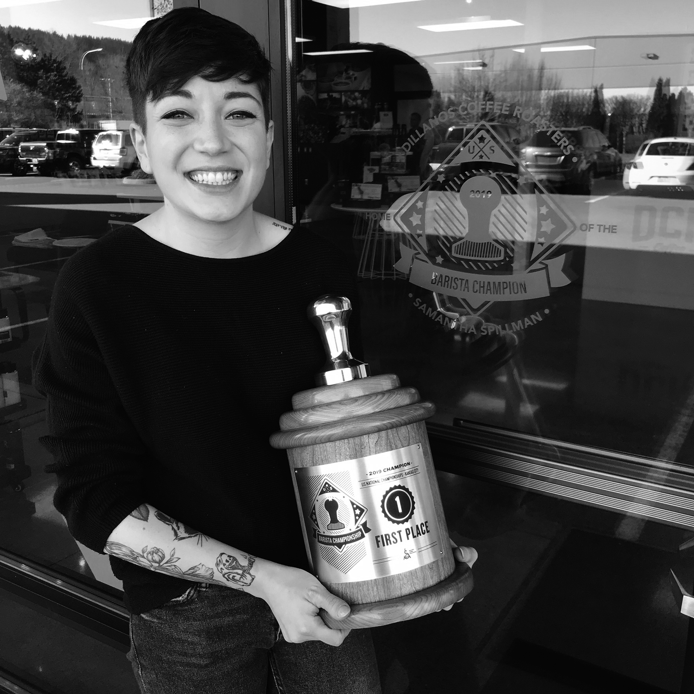
LA Barista Champion
Samantha Spillman
Sidra Lactic · Sunergos Coffee
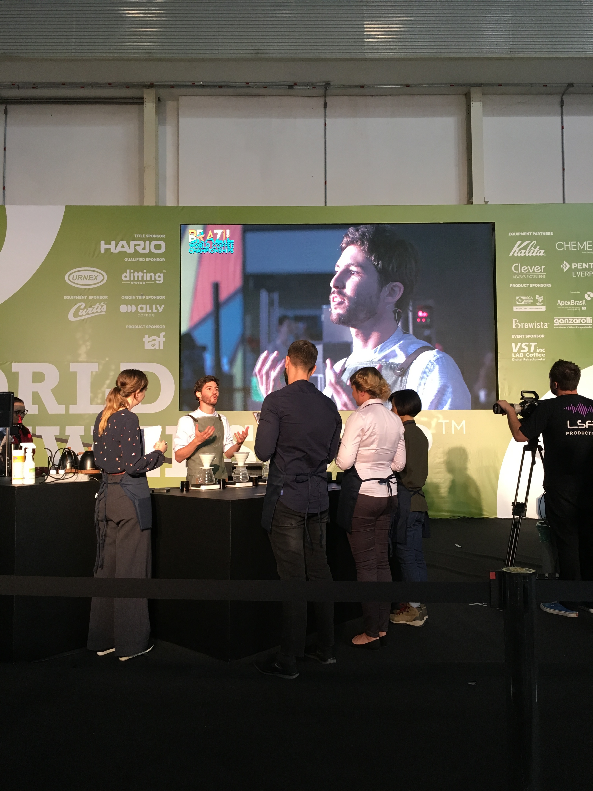
US Barista Finalist
Sylas Semenza
Sidra Lactic · Rooster Coffee Roasters
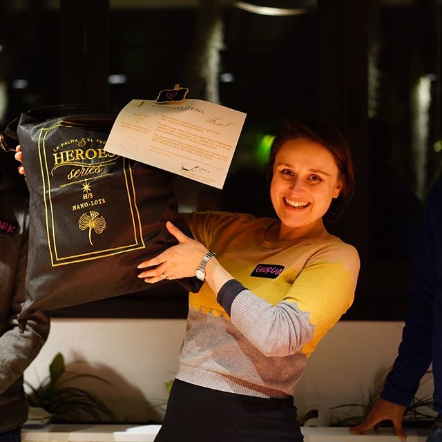
Heroes Series · Recipient
Australia
SL-28 Heroes Series · Direct trade
2020
2025
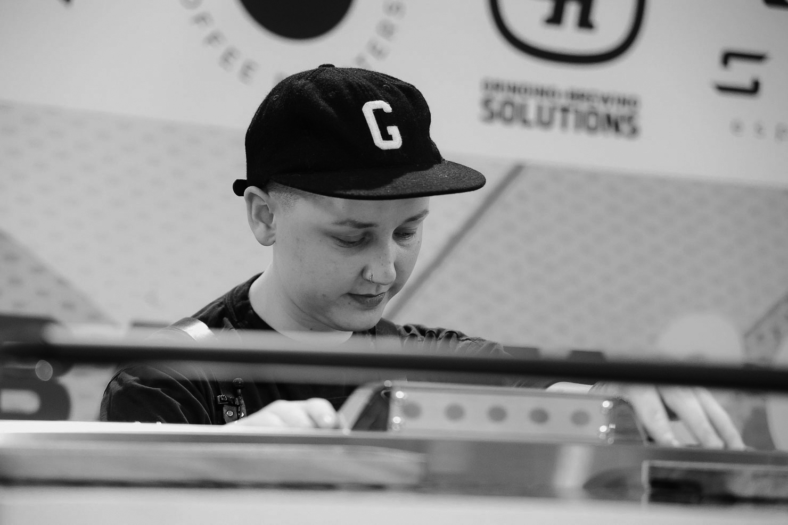
US Barista Championship · Semi-finals
Gray Kauffman
Seattle, WA · 2025